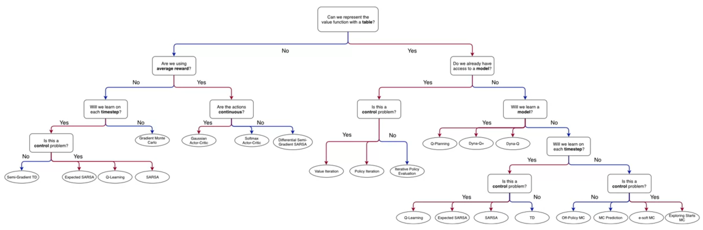

Lesson 1: Introduction to Temporal Difference Learning
Lesson Learning Goals
Temporal Difference Learning definition
Now we turn to a new class of methods called Temporal Difference (TD) learning. According to Bass, TD learning is one of the key innovations in RL. TD learning is a method that combines the sampling of Monte Carlo methods with the bootstrapping of Dynamic Programming methods. The term temporal in the name references learning from two subsequent time steps and the term difference refers to using the difference between the values of each state.
Let us now derive the TD update rule for the value function:
Recall the definition of the value function from the previous course, is the expected return when starting in a particular state and following a particular policy.
We write this as:
\[ v_\pi(s_t) \dot = \mathbb{E}_\pi[G_t | S_t = s] \qquad \tag{1}\]
We can motivate td update rule by considering the DP and MC update rules.
In The MC update rule a sample update based on the return for the entire episode. Which means that we can only update our value function at the end of the episode.
\[ V(S_t) \leftarrow V(S_t) + \alpha [\underbrace{G_t}_{\text{MC target}} -V(S_t)] \qquad \tag{2}\]
where:
\(G_t\) is the return at time step \(t\) and \(S_t\) is the state at time step \(t\).
This is the actual return at time t.
In the DP update rule, the target is a full backup based on the entire distribution of possible next states which we can solve for exactly since we have the full dynamics of the environment.
\[ V(S_t) \leftarrow V(S_t) + \sum_a\pi(a|S_t) ([r(s,a) + \gamma p(s'\mid s,a) V(s')]) \qquad \tag{3}\]
where:
- \(R_{t+1}\) is the reward at time step \(t+1\)
- \(V(S_{t+1})\) is the approximate value of the state at time step \(t+1\)
- \(\gamma\) is the discount factor
- \(\alpha\) is the learning rate
How can we make updates at each time step?
\[ \begin{aligned} G_t & \dot= R_{t+1} + \gamma R_{t+2} + \gamma^2 R_{t+3} + \ldots \qquad \newline &= R_{t+1} + \gamma G_{t+1} \qquad \end{aligned} \tag{4}\]
\[ \begin{aligned} v_\pi(s_t) & = \mathbb{E}_\pi [G_t \mid S_t = s] & \text{definition}\newline & = \mathbb{E}_\pi [R_{t+1} + \gamma G_{t+1} \mid S_t = s] & \text{(subst. Recursive return)}\newline & = \mathbb{E}_\pi[R_{t+1} + \gamma v_\pi (S_{t+1}) |S_t=s] & \text{(subst. value function)}\newline & = \mathbb{E}_\pi[R_{t+1}|S_t=s] + \gamma \mathbb{E}_\pi[v_\pi (S_{t+1}) |S_t=s] & \text{(by linearity of Expectation)} \newline & = R_{t+1} + \gamma v_\pi (S_{t+1}) & \text{(by Expectation of constant RV)} \end{aligned} \]
In this formula we have replaced \(G_t\) with \(R_{t+1} + \gamma V(S_{t+1})\). We now have a recursive formula for the value functions in terms of the next value function. The next value function is a stand in for the value of the Return \(G_{t+1}\) which we don’t know.
we can use this formula to make an online update to our value function using an MC estimate of the return, without saving the full list of rewards.
since \(G_t\), the MC update target is the return for the entire episode, we can only update our value function at the end of the episode. We will soon look at TD learning, which allows us to make updates at each time step.
the motivation for TD learning is based on the MC update rule. The MC update rule is a sample update based on the return for the entire episode. This means that we can only update our value function at the end of the episode. We will soon look at TD learning, which allows us to make updates at each time step.
\[ V_\pi(S_t) \leftarrow V(S_t) + \alpha [ \underbrace{R_{t+1} + \gamma V(S_{t+1})}_{\text{TD target}} - V(S_t)] \]
We can use the following to make online TD updates like we were able to update our value function without saving the full list of rewards. here:
- \(V(S_t)\) is the value of the state at time \(t\)
- \(V(S_{t+1})\) is the value of the state at time \(t+1\)
- \(R_{t+1}\) is the reward at time \(t+1\)
- \(\alpha\) is a constant the learning rate
- the target is an estimate of the return
\[ \begin{aligned} G_t & \dot = R_{t+1} + \gamma R_{t+2} + \gamma^2 R_{t+3} + \ldots \newline &= R_{t+1} + \gamma G_{t+1} \newline \end{aligned} \]
- The MC target is an estimate of the expected value (average of sampled return) - The DP target is an estimate because the true value of the state is not known - The TD target is an estimate for both reasons: a sample of the expected value of the reward, and the current estimate of the value of the state rather than the true value.
Like with MC, the target is a sample updates based on a single observed transition. This is in stark contrast to DP, where the target is a full backup based on the entire distribution of possible next states which we can solve for exactly since we have the full dynamics of the environment.
Temporal Difference Error
- The TD error is the difference between the estimated value of a state and the value of the state at the next time step.
\[ \delta_t \dot = R_{t+1} + \gamma V(S_{t+1}) - V(S_t) \] this is one of the most important equations in reinforcement learning - we will see it again and again.
TD(0) Algorithm
- The TD(0) algorithm is a TD learning algorithm that uses a bootstrapping method to estimate the value of a state.